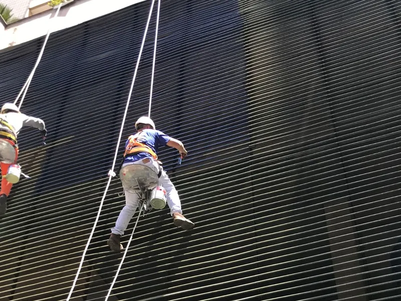

Pintura e fachadas
Pintura de fachada comercial: como planejar sem parar a operação

A fachada é o primeiro contato do cliente com o negócio. O desafio é que hotéis, lojas e prédios comerciais não podem fechar as portas para pintar. Com planejamento, a obra acontece em etapas e a operação segue normalmente.
1. Diagnóstico da fachada
Antes da tinta vem a vistoria. Trincas, pontos de infiltração, reboco solto e pintura descascando precisam ser tratados primeiro. Pintar por cima de um problema só o esconde por alguns meses.
2. Escolha do acesso
Andaime, plataforma elevatória, balancim ou acesso por corda: a escolha depende da altura do prédio, do recuo disponível na calçada e das interferências, como marquises, letreiros e rede elétrica. O acesso por corda, por exemplo, ocupa pouco espaço no térreo e libera a entrada do prédio.
3. Cronograma por etapas
- Dividir a fachada em trechos, para nunca interditar todas as entradas ao mesmo tempo.
- Concentrar os trabalhos sobre acessos e vitrines nos horários de menor movimento.
- Isolar e sinalizar a área abaixo do trecho em execução.
- Proteger vidros, pisos, veículos e letreiros contra respingos.
4. Preparação da superfície
Lavagem, raspagem das partes soltas, correção de trincas e aplicação de fundo ou selador. É a etapa que mais influencia a durabilidade: uma tinta boa sobre uma base mal preparada descasca cedo.
5. Tinta e acabamento
Em área externa, o padrão é tinta própria para exterior, resistente a sol e chuva, nas cores da marca. Quando a fachada leva letreiro pintado, ele entra no mesmo cronograma, com o desenho conferido antes da execução.
Exemplos de obra
A Gomes pintou fachadas e letreiros de hotéis OYO em Jacutinga/MG, Piracicaba/SP e São Carlos/SP e o brise do Hotel Park Tower, em Campinas/SP. As fotos estão em Nosso trabalho.